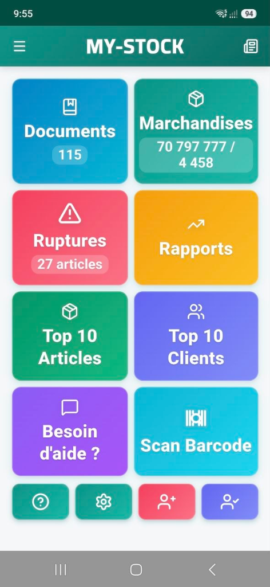
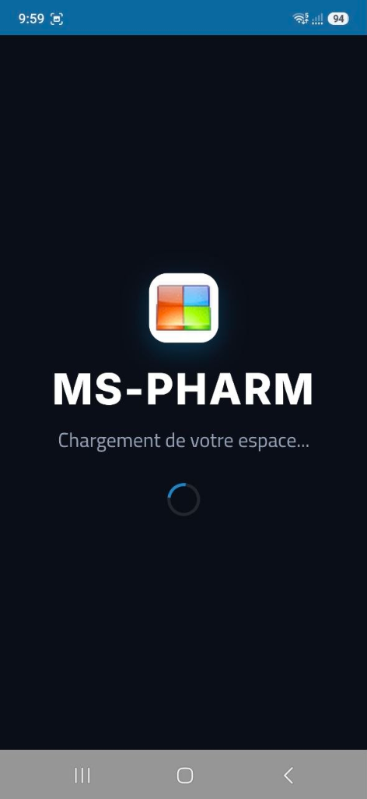

Solutions Logicielles Intelligentes pour Stock, Pharmacies & Laboratoire d'Analyses Médicales
Développé par Moussaoui Services Informatique . Optimisez la gestion complète de votre officine, le suivi des stocks et vos laboratoires d'analyses médicales avec une compatibilité totale CNAS & Chifa.
Nos Solutions Métiers Spécialisées
Retrouvez les versions complètes d'installation ainsi que les dernières mises à jour (MAJ) officielles pour chaque produit.
MS-PHARM
Gestion Complète d'OfficineLa référence pour la gestion de pharmacie en Algérie : facturation Chifa, gestion fine des stocks et périmés, et comptabilité officine.
- Intégration Chifa & Tiers Payant CNAS/CASNOS
- Gestion des lots, seuils de réapprovisionnement
- Ventes au comptoir ultra-rapides
- Statistiques et analyses financières avancées
MY-STOCK
Gestion Commerciale & StockSolution robuste pour commerces et distributeurs : inventaire multi-dépôt, facturation, suivi des créances et gestion des fournisseurs.
- Gestion multi-magasins et multi-dépôts
- Suivi des achats, ventes et marges bénéficiaires
- Compatibilité lecteurs codes-barres & imprimantes
- Historique complet des créances clients/fournisseurs
MS-MEDIC
Laboratoire d'Analyses MédicalesLogiciel ergonomique et complet pour laboratoires d'analyses médicales : gestion des bilans, saisie rapide des résultats et impression des comptes-rendus.
- Gestion complète des bilans & analyses biologiques
- Saisie rapide et validation technique des résultats
- Suivi des prélèvements, patients et antériorités
- Impression personnalisée des comptes-rendus & bilans
MY-STOCK & MS-PHARM sur Smartphone Android
Connectez votre gestion commerciale et votre officine à votre smartphone. Synchronisation en direct avec votre base de données locale.
MY-STOCK Mobile

Gestion commerciale en temps réel : lecteur code-barres par caméra, suivi des stocks, inventaire et alertes ruptures instantanées.
- Scan Code-Barres caméra
- Alertes ruptures de stock
- Marchandises & Top clients
MS-PHARM Mobile

Gestion d'officine en mobilité : consultation des stocks, contrôle des ordonnances, liaison serveur local et alertes périmés.
- Serveur local (Port 5001)
- Cloud Firebase sécurisé
- Stocks & alertes périmés
Outils d'Assistance à Distance
Besoin d'une intervention rapide ? Téléchargez l'un des logiciels d'accès à distance ci-dessous pour permettre à nos techniciens de vous assister en direct.
RustDesk
Solution open-source ultra-sécurisée et performante pour la télémaintenance directe.
Télécharger RustDeskAnyDesk
Connexion ultra-rapide avec faible latence, idéale pour les dépannages urgents.
Télécharger AnyDeskTailscale VPN
Connexion réseau sécurisée maillée WireGuard pour postes distants Ver. 1.44.2 (Win 7 SP1).
Télécharger TailscaleTéléchargez l'outil
Choisissez RustDesk ou AnyDesk selon recommandation.
Lancez le logiciel
Exécutez le fichier sans configuration complexe requise.
Transmettez votre ID
Communiquez votre identifiant par téléphone ou WhatsApp.
Tutoriels & Formations Vidéo
Retrouvez tous nos cours vidéo complets, guides de prise en main et démonstrations pas-à-pas sur notre page dédiée.
Modules Extra & Utilitaires Requis
Composants indispensables, pilotes de bases de données, outils de sauvegarde et bibliothèques d'exécution Windows.
Fichiers Systèmes (SetWin)
Outils d'initialisation et de paramétrage de l'environnement Windows pour MS-Pharm.
Microsoft .NET Framework 4.0
Environnement d'exécution requis pour les applications (Version Full x86/x64).
Fichiers Système DLL
Pack complet des bibliothèques dynamiques et dépendances logicielles (setup_DLL).
Winflector v3.9.8.0
Serveur d'application pour partager MS-Pharm en réseau local ou distant simplement.
Cobian Backup
Planification automatique et sécurisée des sauvegardes de vos bases de données.
Cobian Reflector v2.7.20
Nouvelle génération du logiciel Cobian avec chiffrement et support .NET natif.
PostgreSQL ODBC Driver
Pilote ODBC officiel pour la communication avec les serveurs de base de données PostgreSQL.
RDP Patch (RDPWrap v1.6.2)
Activation des connexions multi-utilisateurs simultanées sur Windows Desktop.
Visual C++ 2015–2022 (x64)
Composants d'exécution Microsoft C/C++ requis pour le moteur logiciel.
cURL 7.46.0 (Win64)
Outil en ligne de commande pour le transfert réseau et les synchronisations d'API.
MY-STOCK API & SCAN IA
Serveur API REST local (Port 5001), scan factures par IA Gemini, sauvegardes à chaud VSS et synchronisation cloud Google Drive.
Contact & Assistance Directe
Notre équipe technique est disponible pour vos installations, formations et dépannages.
Moussaoui Services Informatique
Partenaire de confiance pour l'informatisation des stocks, pharmacies et laboratoires d'analyses médicales en Algérie.
Téléphone & Assistance
Adresse Email
mskhaled39@gmail.comAdresse de l'Agence
Rue 17 Octobre, EL-OUED 39000, Algérie